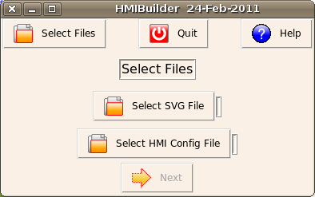
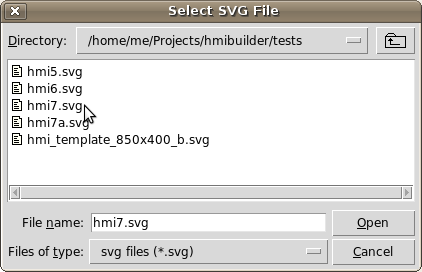
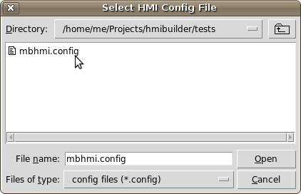
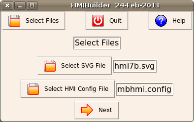

MBLogic
for an open world in automation
MBLogic
for an open world in automation
Select Files
This step selects the completed SVG drawing file and the HMI configuration file. The SVG drawing file should be complete and id names assigned to all the widgets you wish to use. Ids are not required for background or decorative art, only for items which act as control widgets.
The HMI configuration file mbhmi.config should be complete with all the address tags, events, and alarms that you will be using.
If you still have the SVG drawing open in your drawing editor (Inkscape), you should close it at this time as a precaution to ensure that you don't accidentally overwrite the changes you will be making here. HMIBuilder will store data in the SVG file relating to the selections you will be making.
Steps
- Click on "Select SVG File".

- Select the SVG drawing file that you wish to use.

- Select the HMI config file that you wish to use.

- When you have selected both files, you may proceed to the next step.
